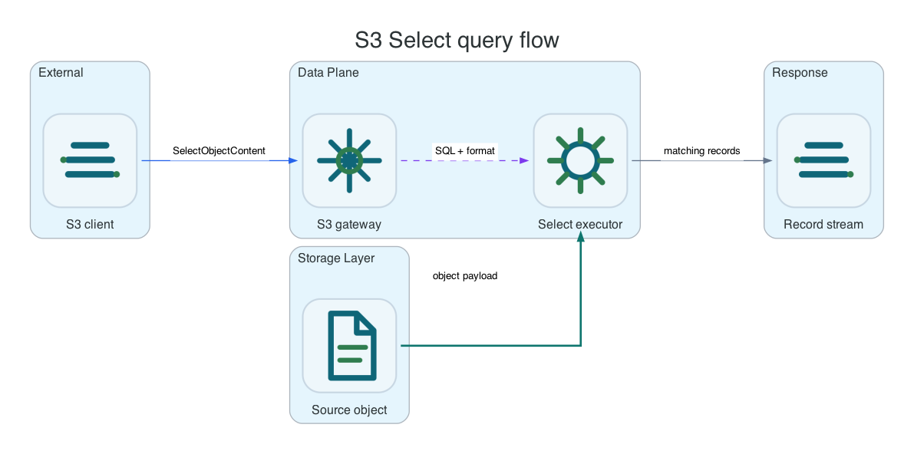

Reference / S3 API
S3 Select.
S3 Select lets clients query object content without downloading the full object. Li9 S3 supports local query execution for supported CSV, JSON, and Parquet inputs with AWS-compatible SelectObjectContent request shape.
Common AWS CLI setup
Run this once for a bucket issued by the active platform control surface. On OpenShift, the values come from the generated S3Bucket or S3BucketAccess Secret. On Helm, Linux, or Windows, use the credentials issued by the runtime control API or administrator tooling.
export NS=li9-s3-runtime
export BUCKET_CR=app-data
export BUCKET="$(oc -n "$NS" get s3bucket "$BUCKET_CR" -o jsonpath='{.status.bucketName}')"
export SECRET="$(oc -n "$NS" get s3bucket "$BUCKET_CR" -o jsonpath='{.status.secretName}')"
export ENDPOINT="$(oc -n "$NS" get secret "$SECRET" -o jsonpath='{.data.AWS_ENDPOINT_URL}' | base64 -d)"
export AWS_ACCESS_KEY_ID="$(oc -n "$NS" get secret "$SECRET" -o jsonpath='{.data.AWS_ACCESS_KEY_ID}' | base64 -d)"
export AWS_SECRET_ACCESS_KEY="$(oc -n "$NS" get secret "$SECRET" -o jsonpath='{.data.AWS_SECRET_ACCESS_KEY}' | base64 -d)"
export AWS_REGION="$(oc -n "$NS" get secret "$SECRET" -o jsonpath='{.data.AWS_REGION}' 2>/dev/null | base64 -d || true)"
export AWS_REGION="${AWS_REGION:-us-east-1}"
export AWS_EC2_METADATA_DISABLED=true
li9s3() {
aws --endpoint-url "$ENDPOINT" --region "$AWS_REGION" --no-verify-ssl s3api "$@"
}For Helm, Linux, and Windows replace the exported values with the endpoint and credentials from that platform. The commands below intentionally use standard AWS CLI syntax after the setup.
Supported Inputs

| Format | Use Case | Notes |
|---|---|---|
| CSV | Delimited operational exports and reports. | Use FileHeaderInfo when the first row contains columns. |
| JSON Lines | Streaming records, logs, and events. | Each line is treated as a JSON document. |
| JSON Document | Structured document queries. | Use expressions appropriate to document shape. |
| Parquet | Columnar inventory or table snapshots. | Useful with inventory and metadata table outputs. |
CSV Query Example
cat > /tmp/select.csv <<'EOF'
city,score
Paris,10
Rome,20
Paris,30
EOF
li9s3 put-object --bucket "$BUCKET" --key select/scores.csv --body /tmp/select.csv --content-type text/csv
aws --endpoint-url "$ENDPOINT" --region "$AWS_REGION" --no-verify-ssl s3api select-object-content --bucket "$BUCKET" --key select/scores.csv --expression "SELECT city, SUM(CAST(score AS INT)) AS total FROM S3Object GROUP BY city ORDER BY total DESC" --expression-type SQL --input-serialization '{"CSV":{"FileHeaderInfo":"USE"}}' --output-serialization '{"JSON":{}}' /tmp/select-output.json
cat /tmp/select-output.jsonWhen Not To Use
- Do not use S3 Select for arbitrary analytics workloads that need joins across many objects.
- Do not expect AWS Glue, Athena, or Lake Formation integration; those are AWS-managed services outside product-local scope.
- Use inventory or metadata tables when the goal is periodic object catalog analysis.